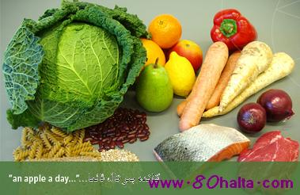

ئالدىنقى يازما
ئالدىنقى يازما كېيىنكى يازما
كېيىنكى يازما
ئوزۇقلۇق يېتىشمىگەندە كۆرىلىدىغان ئالامەتلەر [غىزا ۋە ئوزۇقلۇقلار]
ئاپتور:Birzat ۋاقتى:2010-06-19



دوختۇرخانا ئامبولاتۇرىيسىدە، كۆپ ھاللاردا ئىنىق كېسەللىك ئۆزگىرىشى بولمىغان، ئەممە، بېشى قېيىپ، كۆزى تورلىشىدىغان، ئاسانلا ھېرىپ- چارچايدىغان، ئىشتىھاسى ئازلاپ، بەدەن ئېغىلىغى يېنىكلىگەن بەزى كېسەللەرنى ئۇچراتقىلى بولىدۇ.
ئۇلارنىڭ يىمەك- ئىچمەك ئەھۋالىنى سورىغاندىن كېيىن، ئاندىن مەسىلىنىڭ تۈگۈنىنىڭ نەدىلىگى ئېنىقلىنىدۇ. ئەسلىدە بەزىلەر بىر خىللا ئوزۇقلانغان، بەزىلەر پارچە- پۇرات يىمەكلىكلەرنى يىيىشنى ياخشى كۆرگەن، بەزىلەر ئوزۇقلۇق ماددىلارنىڭ شۇمۇرۇۋىلىنىشىغا دىققەت قىلمىغان. مۇشۇنداق خىلمۇ- خىل ئەھۋاللار نورمال بولغان ئوزۇقلۇق ماددىلارنىڭ تولۇقلىنىشغا تەسىر يەتكۈزگەن. ۋاقىتنىڭ ئۇزىرىشىغا ئەگىشىپ، ئوزۇقلۇق ماددىلارنىڭ يېتىشمەسلىك كېسەللىگى شەكىللەنگەن. بۇ يەردە ئاغرىقلارنىڭ پىلانلىق ھالدا ئوزۇقلۇق ماددىلارنى تولۇقلىشى ئۈچۈن ئاقسىل، ماي، شېكەرلەرنىڭ كەمچىل بولۇشىدىن كېلىپ چىققان ئالامەتلەرنى تونۇشتۇرۇلدى.
ئاقسىل – ئورگانىزىمدىكى ھۈجەيرىلەر بىلەن توقۇلمىلارنى قۇراشتۇرۇپ تۇرغۇچى "قۇرۇلۇش ماتىرىيالى" ھەمدە فېرمېنت ئانتى تىللار (ئانتى بود) ۋە ھورمۇنلارغا زۆرۈر بولغان ماددا. ئۇ، ئادەم بەدىننىڭ ماددا ئالىمىشىشىغا قاتنىشىدۇ. ئادەتتە، ئاقسىل تەمىنلىگەن ئېنېرگىيە مىقدارى ئادەم بەدىنىگە كېرەكلىك بولغان ئېنىرگىيە مىقدارىنىڭ ئوندىن بىر قىسمىنى ئىگەللەيدۇ. بىز ھەممىمىز ئىز تورىنى ياخشى كۆرىمىز!
ئاقسىل كۆپ خىل ئاممۇنىي كىسلاتادىن تەركىب تاپقان. بەزى ئاممۇنىي كىسلاتاسىنى ئادەم بەدىنى ئۆزلۈكىدىن بىرىكتۈرەلمەيدۇ. پەقەت، يىمەكلىكلەردىكى ئاقسىلنىڭ تەمنلىشىگە تاينىدۇ. بۇ، زۆرۈر بولغان ئاممۇنىي كىسلاتاسى مىتئوننى، ۋالىنى، لىئوتسىن، لېزى، تېرئونۇن، تىرىپتوپان ۋە پىنلالانىن، تۇخۇم، گۆش، بېلىق، سۈت، پۇرچاق قاتارلىقلاردا بىر قەدەر مول بولىدۇ. ئادەم بەدىنى ئۆزلۈكىدىن بىرىكتۈرەلەيدىغان ئاممۇنىي كىسلاتا زۆرۈر بولمىغان ئاممۇنىي كىسلاتا دەپ ئاتىلىدۇ. گۈرۈچ، ئۇن ۋە قوناق قاتارلىق يىمەكلىكلەردە زۆرۈر بولمىغان ئاممونىي كىسلاتا بولىدۇ. لىكىن، بىر ۋاقلىق تاماققا كۆپ خىل يىمەكلىك شۇمۇرۋىلىنىپ، ئاقسىل ئۆزئارا تولۇقلىنىپ تۇرىدۇ ھەم بەدەننىڭ ئېھتىياجىنى قاندۇرالايدۇ.
چوڭلارغا كۈنىگە 100 – 80 گىرام ئاقسىل قوبۇل قىلىش زۆرۈر بولىدۇ، ئۇزاق ۋاقىت بۇ مىقداردىن تۆۋەن بولغاندا، مۇسكۇللار تارتىشىپ، بەدەن ئېغىرلىغى يېنىكلەپ كېتىدۇ. بەدەن جانسىز- ھارغىن كېلىدۇ. ئۆسۈش- تەرەققى قىلىش ئاستىلايدۇ. قان مىقدارى ئازىيىپ، قان ئازلىق كېلىپ چىقىدۇ. يۇقۇملۇق كىسەللىككە قارشى تۇرۇش كۈچى تۆۋەنلەيدۇ، كېسەلدىن كېيىن سالامەتلىك تەستە ئەسلىگە كېلىدۇ ھەمدە ئوزۇقلىنىش خاراكتىرىدىكى سۇلۇق ئىششىق پەيدا بولىدۇ.
ماي بەدەننى ئىسسىقلىق بىلەن تەمىنلەيدۇ ۋە زۆرۈر بولغان ماي كىسلاتاسىنى يەتكۈزۈپ بېرىدۇ. مايدا ئېرىيدىغان ۋىتامىنلارنىڭ شۈمۈرۈلۈشىگە ياردەم قىلىدۇ، ئىشتىھانى ئاچىدۇ. فوسفورلۇق ماي – ھۈجەيرە قۇرۇلمىسىنىڭ كەم بولسا بولمايدىغان بىر تەركىۋى قىسمى. خولىستىرىن – ۋىتامىن D نى بىرىكتۈرگۈچى ئاساسىي خام ئەشيا بولۇپ، بۇ، بۆرەك ئۇستى بېزى ھورمۇنى بىلەن جىنسىي ھورمۇنىنىڭ مۇھىم تەركىبىدىن ئىبارەت. لېكىن، ئۇنىڭ قاندىكى مىقدارى ئېشىپ كەتسە، ئارتىرىيە قېتىۋىلىشنى كەلتۈرۈپ چىقىرىدۇ. بۇ ئۇنىڭ بىر زىيانلىق تەرىپى. تور دۇنياسىدىكى چاقنىغان يۇلتۇز - ئىز تورى!
چوڭلار كۈنىگە 60گرام ئەتراپىدا مايغا مۇھتاج بولىدۇ. بۇنىڭدىن كەم بولغاندا مايدا ئېرىيدىغان ۋىتامىنلار يېتىشمەسلىك كېسەللىگىنى ئاسانلا كەلتۈرۈپ چىقىرىدۇ. مايدا ئىرىيدىغان ۋىتامىنلار بولسا ۋىتامىن A، D، K قاتارلىقلارنى ئۆز ئىچىگە ئالىدۇ.
شېكەر: بۇنى ئۇگلى كىسلاروت دەپمۇ ئاتايدۇ. بۇ، كىراخمال، گىلوكوگېن، مالتوزا، شېكەر قومۇشى قەنتى، سۇت شېكىرى بىلەن ئۇزۇم شېكىرىنى ئۆز ئىچىگە ئالىدۇ.
شېكەر – ھۇجەيرىلەرنىڭ كەم بولسا بولمايدىغان بىر تەركىۋى. ئادەتتە، ئادەم بەدىنىگە زۆرۈر بولغان ئېنېرگىيىنىڭ %70نى شېكەر تەمىنلەيدۇ. ئۇ يەنە مايلارنىڭ بەدەن ئىچىدە "كۆيۇشى"گە ياردەملىشىدۇ، ئورگانىزىم ئۆزىدىكى ئاقسىلنىڭ بەدەن ئىچىدە بىرىكىشىگە ياردەم بېرىدۇ.
كىشىلەرنىڭ كۈنلۈك يىمەكلىكلىرىدە شېكەر %80تىن كۆپرەكنى ئىگەللەيدۇ. بۇنىڭ ئىچىدە ئاساسلىقى – كىراخمالدۇر. بىر سەر گۇرۇچ ياكى ئۇن %50لىك گىلىكوزا ئوكۇلىنىڭ 70 مىللىگىرام مىقدارىغا تەڭ كېلىدۇ. ئادەتتە، كىشىلەر يىمەكلىكلەردىن يېتەرلىك بولغان شېكەرنى قوبۇل قىلالايدۇ. شېكەرنىڭ شۇمۇرۇلىشى ئاز بولۇپ قالسا ئورگانىزىمنىڭ ئۆسۈپ – تەرەققى قىلىشىغا تەسىر يېتىپ، بەدەن ئېغىرلىغى يېنىكلەپ، ئاسانلار ھېرىپ- چارچايدىغان بولۇپ قالىدۇ.
ئاپتۇرى: ئىنىقسىز
مەنبە: ساقلانما ماتېرياللىرىم

 يازما مەنبەسى: بېكەت ئەسىرى
يازما مەنبەسى: بېكەت ئەسىرى خەتكۈش:
خەتكۈش:  مۇناسىۋەتلىك يازمىلار:
مۇناسىۋەتلىك يازمىلار:
ئىنكاس: 0 | نەقىل: 0 | كۆرۈلگىنى: -
ئىنكاس يوللاش